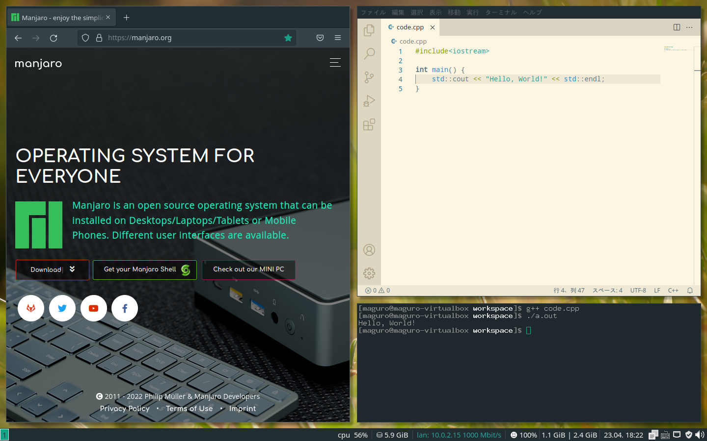
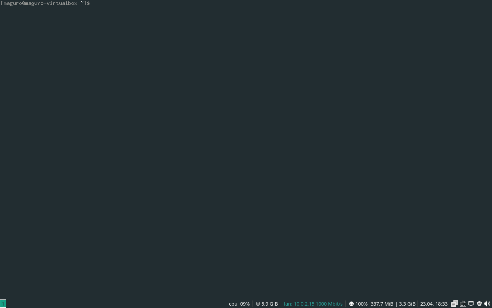
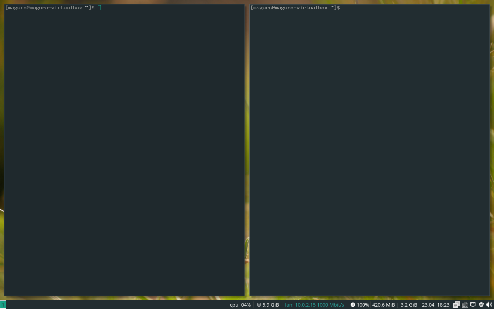
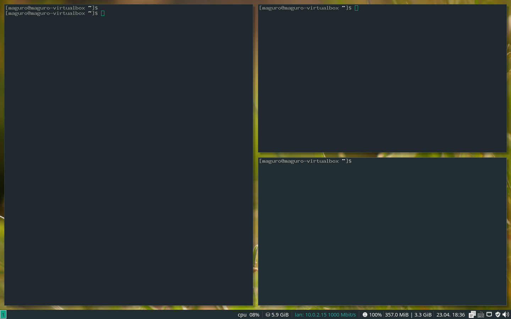
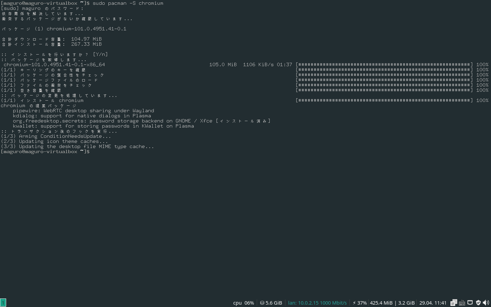

76回生 maguro
こんにちは。76回生（高2）のmaguroです。普段は競技プログラミングとCTFをしています。気が付いたらもう高校生活の終わりが近づいており、焦りが出始めてきました。
今回は、前に使って思ったよりも良かったi3 window managerを紹介したいと思います。
i3 window manager(i3wm)とは、Linux上で動くタイル型ウィンドウマネージャです。多分ほとんどの人が分かっていないと思うので、とりあえずデスクトップ画面を見せたいと思います。これはManjaro i3wm Editionです。*1
[*1] 筆者はWindowsをメインで使っているので、これは仮想環境で撮影しています。

図3.1: デスクトップ画面
これらの画面をキーボードだけで表示することができます。慣れるとマウスで操作するよりも早くできます。
ここからちょっと詳しく説明します。分からなかったら飛ばしてください。
ウィンドウマネージャはウィンドウの描画や更新の手法で大きく
の3種類に分けられます。タイル型ウィンドウマネージャは他の2つのウィンドウマネージャと違い、ウィンドウ同士が重ならないように分割して表示します。
「ウィンドウ同士が重ならない」以外に、i3wmの特徴として
が挙げられます。
[*2] 一応WindowsやMacのようにマウスで動かせて、他のものと重なるウィンドウも作ることができます。
本記事では具体的な入手手順は紹介しません。i3wmと検索すると様々な方法が出てくると思います。
まずは先ほどデスクトップ画面を見せた、i3wmが使えるLinuxであるManjaro i3wm Editionを起動して、ターミナル（コマンドが打ち込めるところ）を開けるようにしましょう。ここでi3wmでよく使うmodキーについて説明します。
modキーはi3wmで使用する特別なキーで、デフォルトだとWinキー（Macでいうコマンドキー）やAltキーが割り当てられています。
このキーと他のキーを一緒に押すことで、様々なことを行うことができます。例えば、
$mod + enterでターミナルを開く$mod + shift + qでウィンドウを閉じるなどです。
とりあえず$mod + enterでターミナルを開きます。

図3.2: ターミナル（1画面）
もう一回$mod + enterを押すと、画面が分割されてターミナルが2つ表示されます。

図3.3: ターミナル（2画面）
下のショートカットでフォーカスするウィンドウを変えられます。
$mod + jで左$mod + kで上$mod + lで下$mod + ;で右また、ウィンドウを追加するときにどこに追加するかは下のショートカットで指定できます。
$mod + hで右方向$mod + vで下方向例えば、画面に何もソフトが無い状態から$mod + Enter → $mod + Enter → $mod + v → $mod + Enterと入力すると下の画面のようになります。

図3.4: ターミナル（3画面）
そして、フォーカスしているウィンドウを閉じるためには、$mod + shift + qと押します。
i3wmの特徴にあるワークスペース（仮想デスクトップ）について説明します。
Windows 10の場合、
win + ctrl + dで仮想デスクトップを作成win + ctrl + (→ or ←)で仮想デスクトップの切り替えwin + ctrl + F4で仮想デスクトップの削除ですが、i3wmは
$mod + 数字キーで数字番号のワークスペースに切り替える$mod + shift + 数字キーでアクティブなウィンドウを数字番号のワークスペースに移動するとかなりシンプルです。わざわざ矢印キーで操作する必要がありません。
ソフトのインストールは主に
の2つの方法があります。今回はコマンドでインストールします。
コマンドでインストールするには、Manjaro i3wm Editionではpacmanというパッケージマネージャを使用します。基本的な使い方は、sudo pacman -S インストールしたいパッケージ名と打つだけです。例えば、Chromium(Chromeのなにか)をインストールすると、以下のようになります。

図3.5: Chromiumのインストール
パッケージは日を追うごとにどんどん新しくなるので、定期的にアップデートをしないといけません。全てのパッケージのアップデートはsudo pacman -Syuで行うことができます。
画面の下にあるタスクバーはi3barと呼ばれ、これらに書かれている内容はデフォルトではi3statusというパッケージによって生成されています。
しかし、i3statusよりも設定が豊富なパッケージに
のようなものがあります。詳しい手順は省きますが、これらをインストールして設定を変えると、タスクバーを上に持ってきたり、タスクバーに書かれた内容を変えることができます。
いかがだったでしょうか。仮想環境が壊れてしまい、最後の方はスクリーンショットを載せることができず申し訳ないです。1人でも多くi3wmの魅力を知っていただければ幸いです。